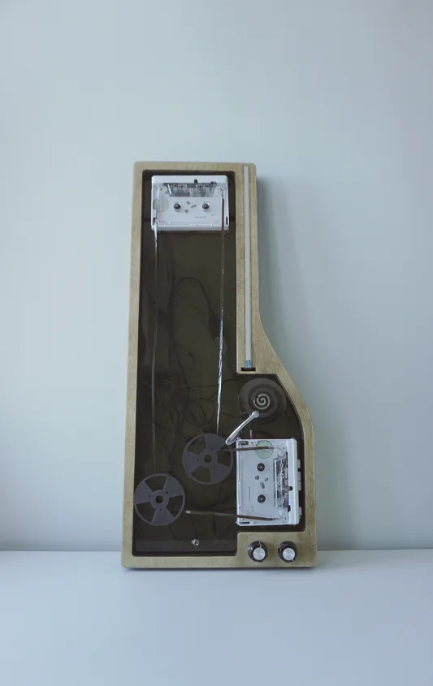
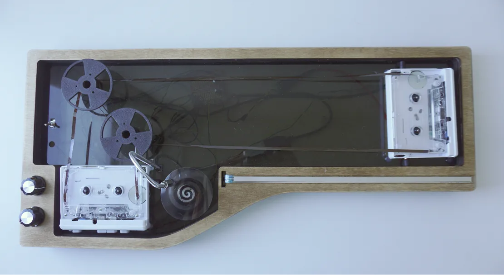
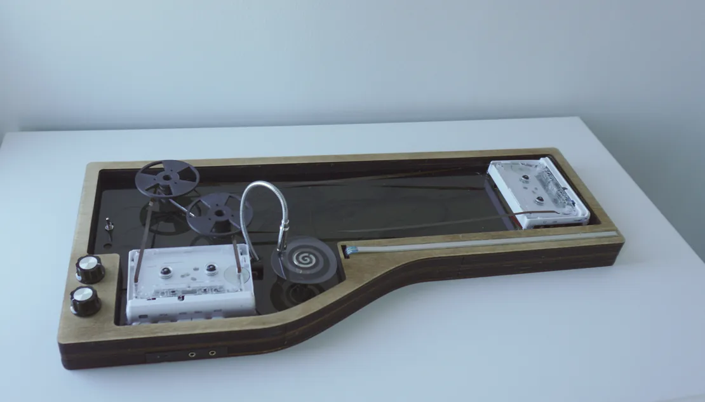
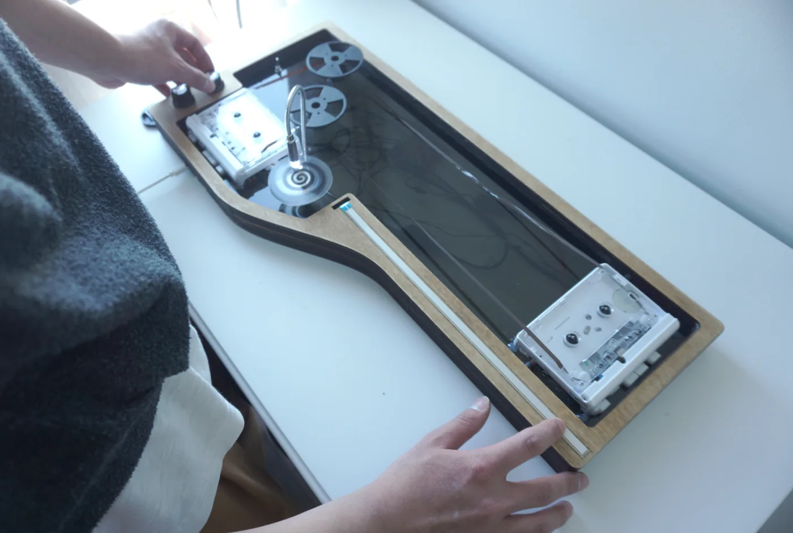
Design and Motivation
Concept: Interplay of Rotation and Sound
- Rotation is somehow harmonic.
- Music is making linear stuff into rotating stuff
- Rotating along a circle's circumference creates a sine wave
- A motor is rotating inside a cassette tape player
The inspiration of Tape Traverse stems from two concepts: rotation and travel. Rotating along a circle gives us a sine wave, looping various audio clips creates dynamic compositions, and repeating a kick drum sound at a high frequency yields a synth-like tone. While rotation is inherently cyclic, it is the process that bridges this rotational property with the linear structure of music we listen to everyday. Imagine a point travelling along a circle cyclically, and at the same time generating a tone that we perceive in a time-based manner.
Tape Traverse explores using hardware and the physical movements they enable to embody the concepts of rotation and travel in sound. Performers see the tape traveling of the cassette tape moving from one side to the other when making sound. They will also see the spinning of the disk when turning on tremolo using knobs. The instrument's sound qualities, pitch and amplitude modulations, are all embodied by the qualities of the hardware-enabled physical movements.
Goal: Making Visible Rotations
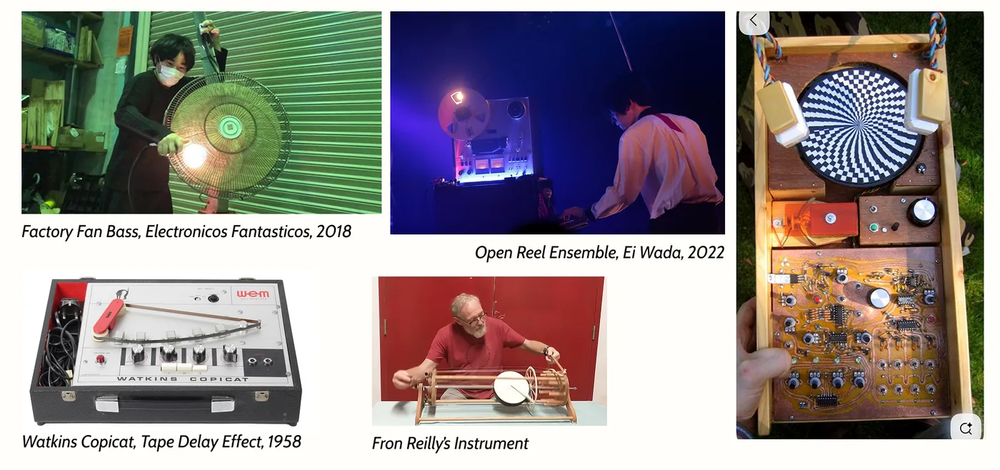
To clearly show the physical movements of the hardware, making the instrument portable is important. A guitar is a great example of this. Being able to hold the instrument and move around with it allows the performer to show the physical movements to the audience, while also enabling more expressive gesture in a musical performance.
The first prototype of Tape Traverse is Tape Slider. It uses a soft potentiometer to control the pitch of a hacked cassette player. The performer can hold the instrument, sliding on the potentiometer and even touching the tape to create different sound effects.
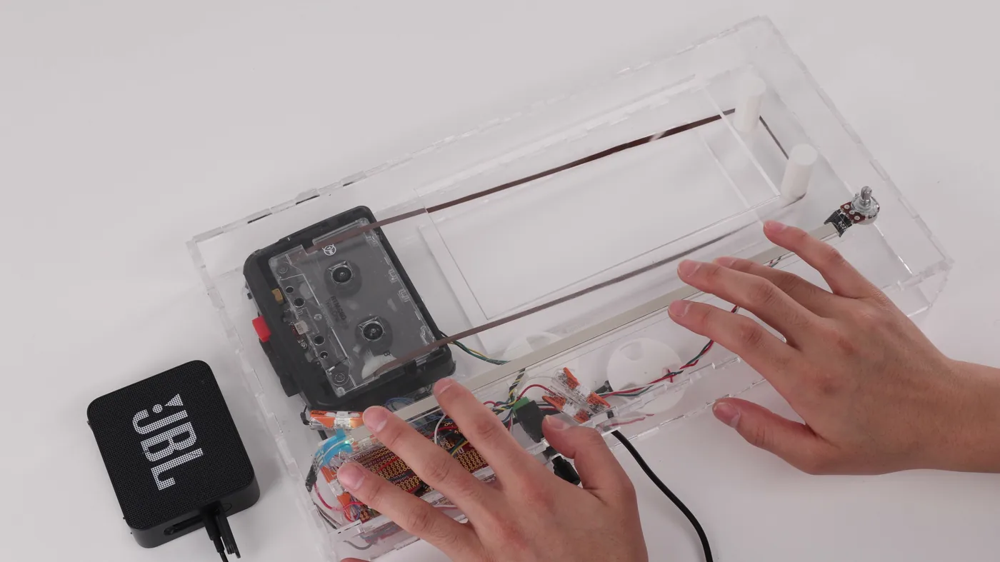
Prototyping
Building Tape Traverse: Designing, Prototyping, and Testing
The case of the instrument is made by stacking layers of plywood panels cut using a laser cutter. The form is first being designed in Adobe Illustrator. With the help from Vivian, we built a 3D model of it in Rhino and sliced it into corresponding shape for each layer.
The pitch of the instrument is controlled using a soft potentiometer. The performer can slide on the potentiometer to create continuous gliding and bending pitch. By exposing the tape, performers can touch them to create subtle variations in timbre.
Additionally, the signal output from the tape went in to an optical tremolo module, a method documented in the Make Magazine in 2012 to create tremolo effect using light. A photocell that connects the tip and sleeve is acting as a voltage divider. The spinning disk on top of the photocell with alternating black and transparent pattern is modulating the resistance of the photocell, there by attenuating the signal in a cyclic way, creating a amplitude modulation.
Together, the gestures of sliding, touching the tape, and modulating the amplitude create a wide range of expression during performance, controlling the sound qualities in an organic way. When something occurs to the sound — a change in timbre, pitch, or amplitude, they are also being embodies by the physical, specifically cyclic, movement of the tape, the spinning disks, and the knobs, corroborating the idea of interplay between sound and rotation.
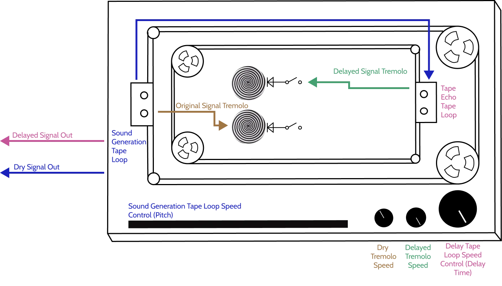
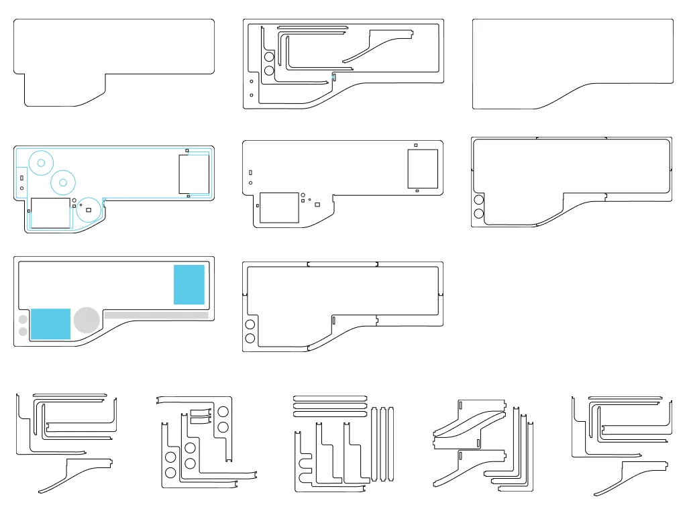
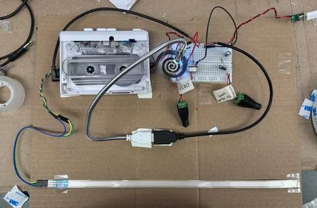
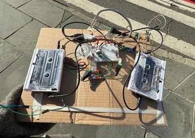
Showcases
I performed with Tape Traverse at the ITP NIME Show 2025 at Littlefield Brooklyn. The performance is 8 minutes long. I incorporated a composition made using Ableton Live with the live improvisation of the instrument. I also incorporated live keyboard playing, exploring how my instrument fits within a larger music setting.
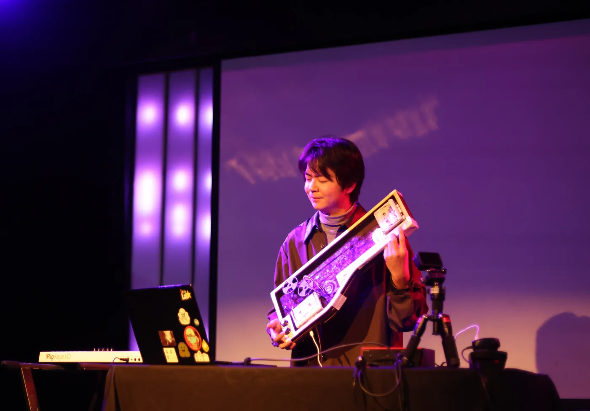
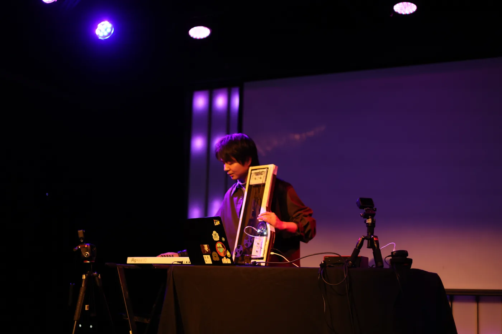
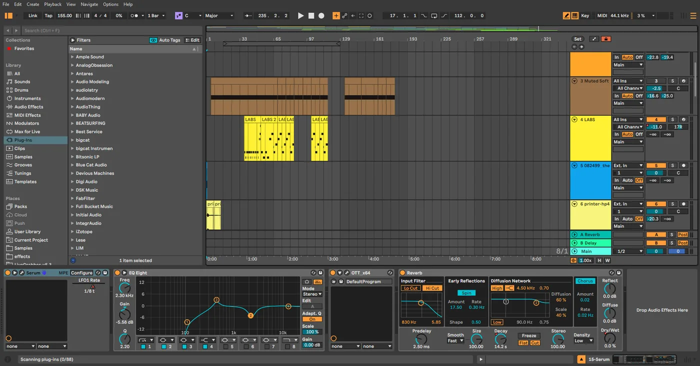
Tape Traverse was also showcased at NYU ITP Spring Show 2025, where people came and tried the instrument out. It is also being presented at the Omnicom Innovation Fair 2026, and has been nominated at Open Hardware Summit 2026.
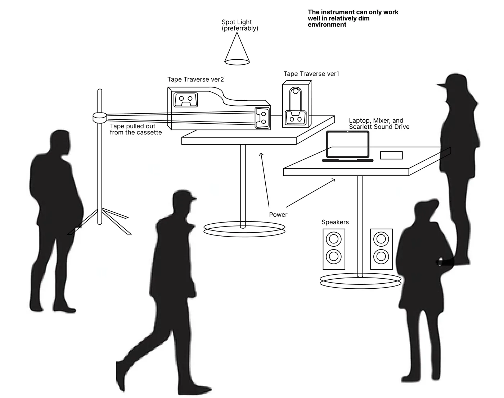
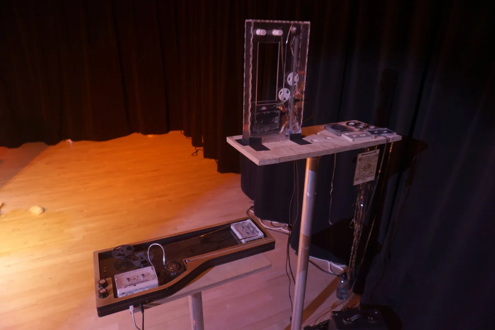
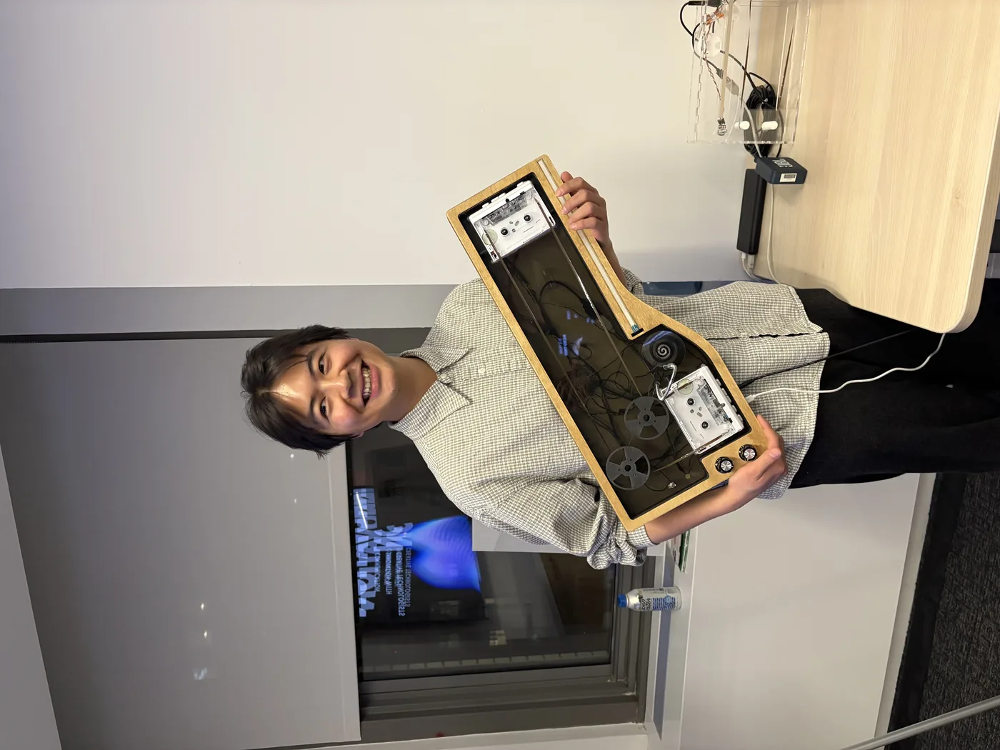